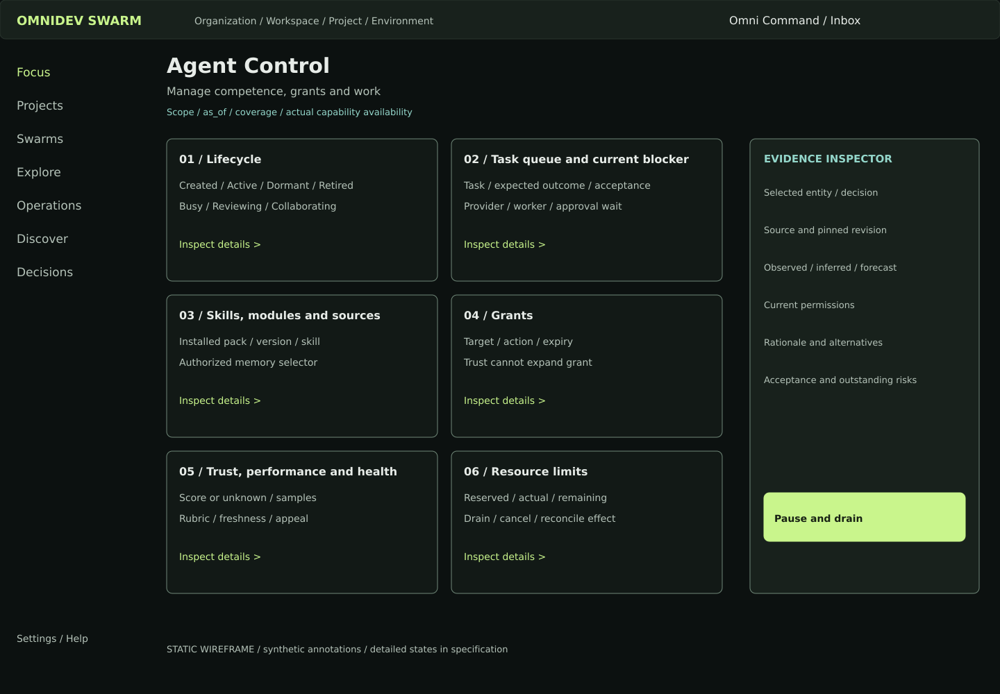
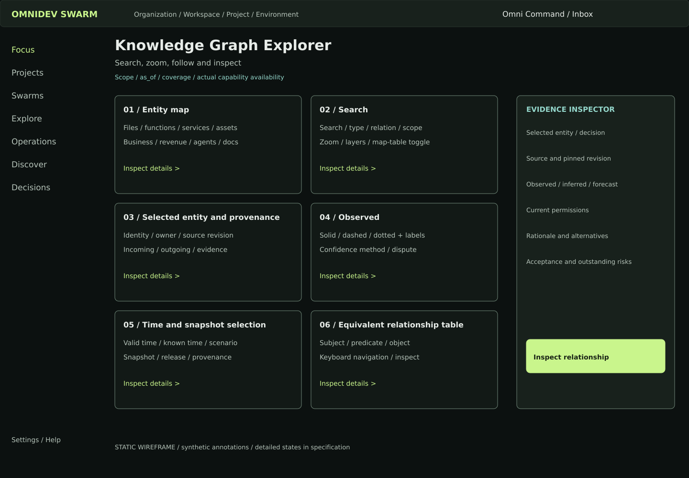
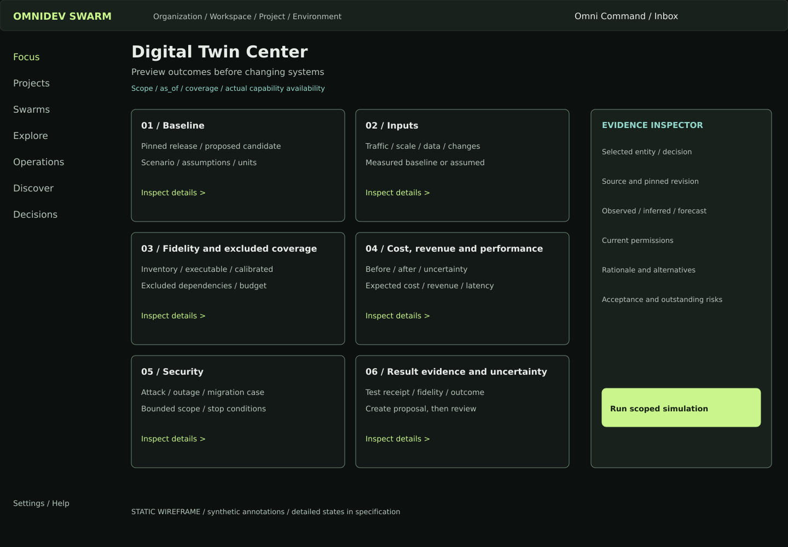
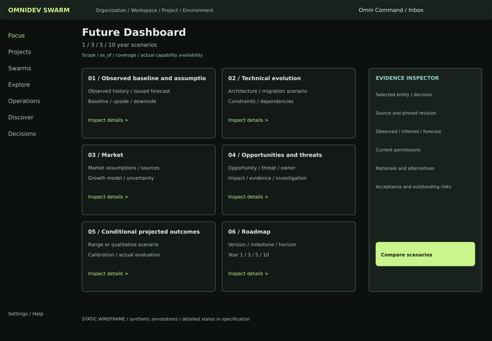
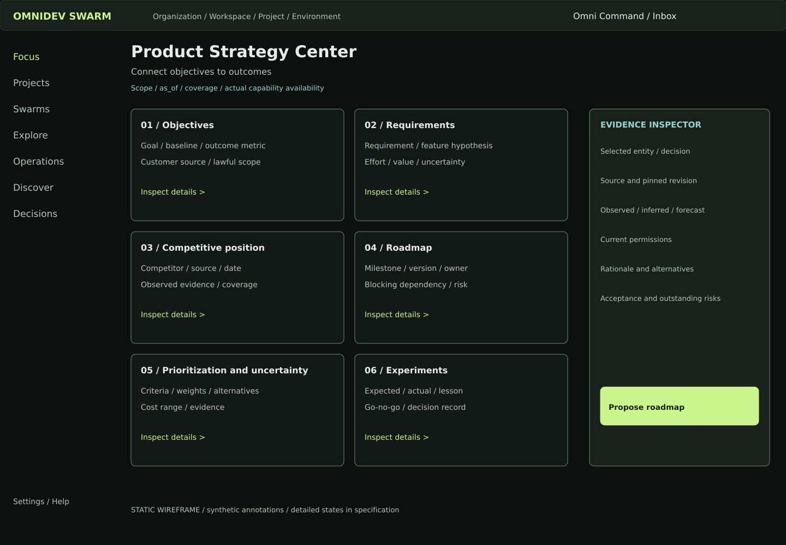
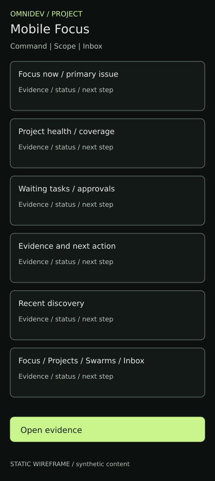

17 static wireframes. Synthetic design annotations; this is not the live platform. Open each diagram or use the chapter specification for behaviors and states.
What should I focus on right now?
Understand one connected project
Trace code, decisions and behavior
Manage competence, grants and work

Company > project > swarm > agent > task
Explore boundaries and dependency impact
Search, zoom, follow and inspect

Preview outcomes before changing systems

Turn possibilities into tested value
1 / 3 / 5 / 10 year scenarios

Validate exposure and coordinate response
Deliver and operate with evidence
Connect objectives to outcomes

Find, evaluate and retain knowledge
Three decisions needing leadership
Natural language > scoped intent > evidence
Monitor, inspect and decide
